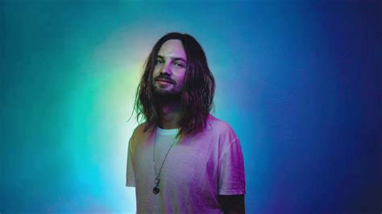

TAME IMPALA
Meet the band

Reasons to give TameImpala a listen!
- Inspiration to music producers
- Well designed music
- beautiful array of sound designed tracks
- fits most settings
Maybe it's something in the water or possibly related to the reverse toiletbowl water direction, whatever the case might be something is going on in
Australia causing single artists to articulate huge ensembles of music alone and then have a band join them on tour or for recording.
No we are not talking about Pilini, who share too many coincidences with T.I other than the vocals, which T.I seems to blend
seemlesly into any of the songs he produces.
Tame impala started back in
and only consists of one remarkable man
some might say nay but I say yay
and just incase this wasn't enough you can always check out his website .